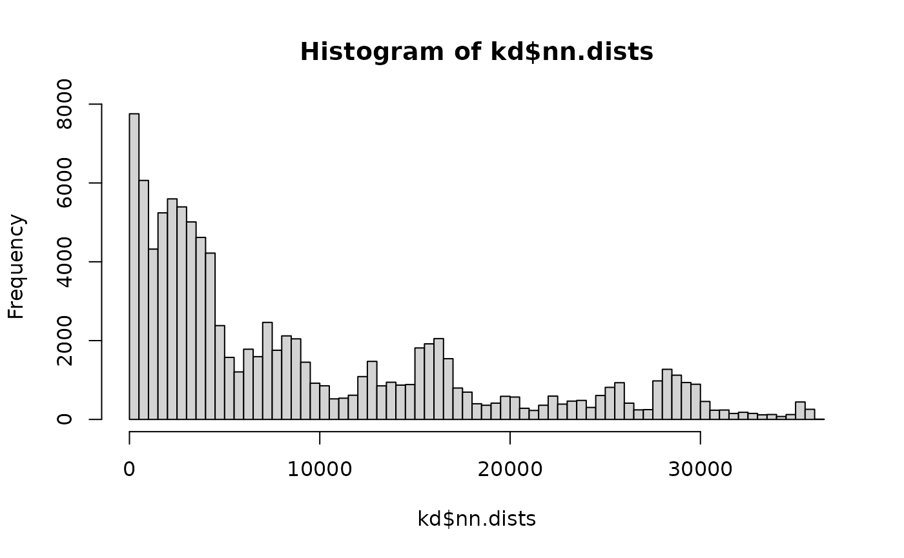
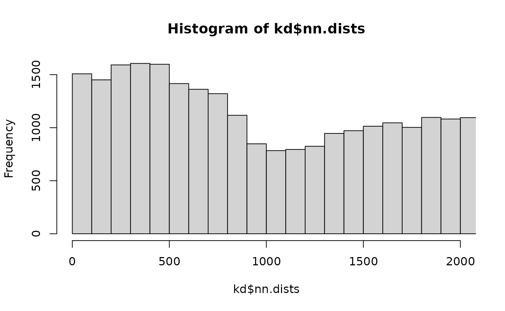

Note
This is an R Markdown Notebook. When you execute code within the notebook, the results appear beneath the code.
Try executing this chunk by clicking the Run button within the chunk or by placing your cursor inside it and pressing Cmd+Shift+Enter.
Find the distance between meshes
There are two ways that I can immediately think of addressing this
- Find the distance of every vertex on mesh 1 to its nearest neighbour on mesh 2
- Find the (signed) distance from every vertex of mesh 1 to the surface of mesh 2
Obviously the ideal situation would be to find the mesh to mesh distances for the two objects (or even do a Euclidean distance transform on the voxel representation of the objects.) but neither of those are so accessible.
Option 1 is probably still a perfectly good option for most purposes since the meshes are quite densely sampled (i.e. the vertices are close together).
Setup and Mesh volume
Let’s use the same example that I mentioned on FlyWire slack.
## Loading required package: nat## Loading required package: rgl## Registered S3 method overwritten by 'nat':
## method from
## as.mesh3d.ashape3d rgl## Some nat functions depend on a CMTK installation. See ?cmtk and README.md for details.##
## Attaching package: 'nat'## The following object is masked from 'package:rgl':
##
## wire3d## The following objects are masked from 'package:base':
##
## intersect, setdiff, union## Run dr_fafbseg() for a status report on your installation
choose_segmentation("flywire31")
va6pn=read_cloudvolume_meshes("720575940633169983")## downloading meshes## parsing downloaded meshesThere we were asked to find the volume of a mesh. The first attempt fails
Rvcg::vcgVolume(va6pn[[1]])So we need to clean up the mesh:
va6pn.clean=Rvcg::vcgClean(va6pn[[1]], sel=0:6, iterate = T)## removed 68 duplicate faces and 0 duplicate vertices
## removed 0 unreferenced vertices
## removed 34 Non-manifold faces
## removed 0 degenerate faces
## removed 16 Non-manifold vertices
## split 3 non-manifold vertices
## merged 0 close vertices
## removed 0 duplicate faces and 0 duplicate vertices
## removed 3 unreferenced vertices
## removed 0 Non-manifold faces
## removed 0 degenerate faces
## removed 3 Non-manifold vertices
## split 0 non-manifold vertices
## merged 0 close vertices
## removed 0 duplicate faces and 0 duplicate vertices
## removed 0 unreferenced vertices
## removed 0 Non-manifold faces
## removed 0 degenerate faces
## removed 0 Non-manifold vertices
## split 0 non-manifold vertices
## merged 0 close vertices
vol=Rvcg::vcgVolume(va6pn.clean)## Warning in Rvcg::vcgVolume(va6pn.clean): Mesh is not watertight! USE RESULT
## WITH CARE!## Warning in Rvcg::vcgVolume(va6pn.clean): Mesh is not coherently oriented! USE
## RESULT WITH CARE!
vol## [1] 2.506317e+12
# cubic microns
vol/1e9 ## [1] 2506.317Compare with neuron’s skeleton available from VFB catmaid
## Loading required package: catmaid## Loading required package: httr## Loading required package: nat.flybrains## Loading required package: nat.templatebrains## Loading required package: nat.nblast
fafbconn=vfbcatmaid("fafb")
va6pn.skel=read.neurons.catmaid("name:VA6.*PN", conn=fafbconn)
summary(va6pn.skel)## root nodes segments branchpoints endpoints cable.length nTrees connectors
## 16 11222 16840 2402 1172 1231 4003108 1 2158
## 3133 1255 19832 2974 1461 1514 4800908 1 1026
## nsoma
## 16 1
## 3133 1
cable.length=summary(va6pn.skel)[1,"cable.length"]
vol/cable.length # in nm## [1] 626092.8
vol/cable.length/1e6 # in µm## [1] 0.6260928
A=vol/cable.length/1e6 # mean area µm2
sqrt(A/(2*pi)) # implied radius µm, seems reasonable## [1] 0.3156672Option 1: Vertex to vertex distance
So let’s try and find the vertex to vertex distance for a pair of neurons. We happen to know that this lateral horn local interneuron is a target of the VA6 PN.
pv4b4=read_cloudvolume_meshes('720575940619630430')## downloading meshes## parsing downloaded meshesNow we can use a k-d
tree to find the nearest neighbour distances very efficiently. Note
also the use of the xyzmatrix
function to extract vertex locations - this works for all objects that
the natverse knows about.
# better to make the tree from the larger object
# and query using points from the smaller object
nvertices(pv4b4)## 720575940619630430
## 101419
nvertices(va6pn)## 720575940633169983
## 877023## List of 2
## $ nn.idx : int [1:101419, 1] 4041 4041 4041 4041 4041 4041 4041 4041 4041 4041 ...
## $ nn.dists: num [1:101419, 1] 30734 30613 30251 30724 30213 ...This gives us:
- a set of vertex indices for the closest match on the VA6 PN for every vertex on the LHLN
- the distances to those matching vertices
We can take a look at the distribution of the distances like so:
hist(kd$nn.dists, br=100)
You can see that there are actually quite a lot of close distances.

and I assume that the excess of distances <1000 nm where there is a little dip in the distribution is related to this being a pair of neurons that are actually synaptically connected.
Locations of closest approach
OK. So where do those meshes actually approach each other. Well we could look at the locations of the very closest distances <100 nm. How many are there?
sum(kd$nn.dists<100)## [1] 1508Still a lot! This is because at a location of close approach between the neurons, there will be multiple vertices that are very close together. Separating out these distinct contact locations is a more complex problem than simply calculating all of these vertex distances. The first thing we could do is throw out cases where the same vertex on the target neuron is a match.
## [1] 1017Looks like that would reduce by a third.
Visualising contacts
Let’s just take a quick detour and see what the close approaches look like:
rgl::setupKnitr()
nopen3d()
plot3d(pv4b4, type='wire')
plot3d(va6pn, col='red', type='wire')
spheres3d(xyzmatrix(pv4b4)[kd$nn.dists<100,], col='green', r=500)Show close nodes on the query mesh
Just the query mesh
Identifying discrete contact zones
There are a range of ways this could be done, essentially what we have is a number of local minima in the distance field to find. It might also be the case that one “patch” on one neuron actually matches several patches on the other neuron. However we’ll just try to pick a simpler approach as an example.
Let’s take the points below threshold distance on the query neuron and find the geodesic distance (i.e. the distance along the mesh surface) between them.
We need to do a bit of prep work for this, to make a graph representation of the mesh.
#' Make an igraph representation of the edge network of a mesh object
#'
#' @param x A \code{mesh3d} object or an object for which an \code{as.mesh3d}
#' method is defined. As a convenience the first mesh object is extracted when
#' \code{x} is a \code{shapelist3d} object.
#' @param ... additional arguments passed to \code{as.mesh3d}
#'
#' @return a \code{igraph} object whose vertices correspond to the vertices of the
#' original mesh object and whose edges have weights matching the edge lengths
#' in the mesh.
#' @export
mesh2graph <- function(x, ...) {
if(inherits(x, 'shapelist3d')) x=x[[1]]
if(inherits(x, 'neuronlist')) x=x[[1]]
if(!inherits(x, 'mesh3d')) x=as.mesh3d(x, ...)
if(nrow(x$it)!=3) stop("I only work for triangulat meshes right now")
# make the edge list
v1=x$it[1,]
v2=x$it[2,]
v3=x$it[3,]
el=rbind(cbind(v1,v2), cbind(v1,v3), cbind(v2,v3))
g=igraph::graph_from_edgelist(el, directed = FALSE)
# calculate lengths of each edge
xyz=xyzmatrix(x)
edgelengths = function(v1, v2) {
deltas=xyz[v1,,drop=F]-xyz[v2,,drop=F]
sqrt(rowSums(deltas^2))
}
weights=c(edgelengths(v1,v2), edgelengths(v1,v3), edgelengths(v2,v3))
igraph::E(g)$weight=weights
g
}Convert the LHLN to this mesh representation
g=mesh2graph(pv4b4)Now we can find the geodesic distance between all selected nodes.
Let’s try clustering that distance matrix
# cut using a height relating to a separation of 3000nm
groups=cutree(dd, h=3000)
# sample randomises colours so that neighbouring clusters have different colours
set.seed(42)
groupcols=sample(rainbow(max(groups)))[groups]
nclear3d()
spheres3d(xyzmatrix(pv4b4)[kd$nn.dists<100,], col=groupcols, rad=200)
wire3d(pv4b4[[1]], col=ifelse(kd$nn.dists<100, 'red', 'black'), type='wire')